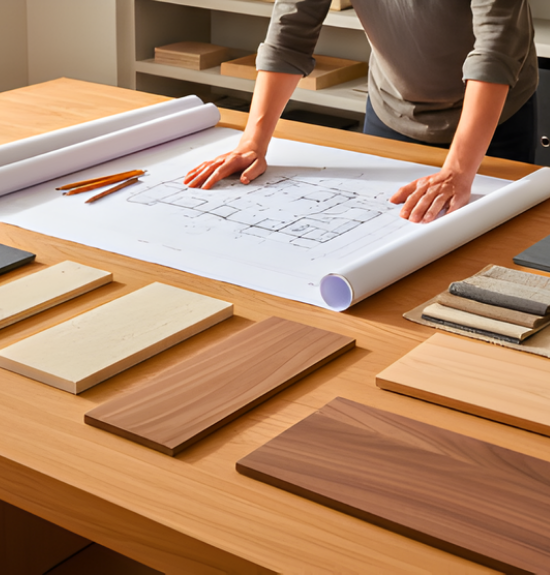
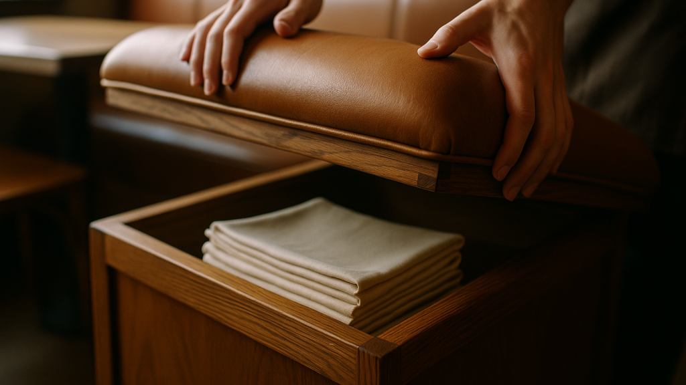
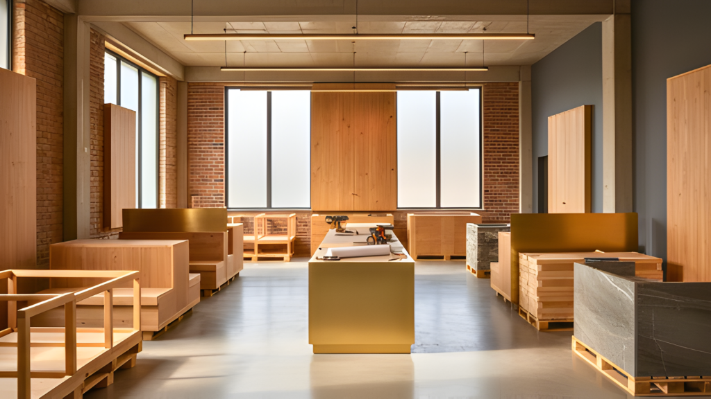

In India’s fast-growing F&B landscape, where every square foot impacts operations, customer experience, and brand identity, one name has consistently stood out as the gold standard in restaurant and bar design—Sona Mantri.With 30 years of experience, 3500+ restaurants designed, 350+ brands transformed, and 8 million+ sq. ft. of built spaces, Sona has become the trusted partner for restaurateurs looking to scale with speed, precision, and world-class design.
1.A Journey That Started with a Broken KFC Outlet
Sona didn’t enter design through the conventional route.
Her first tryst with the world of F&B interiors began not with a glamorous project—but with repairing a KFC outlet. That repair job revealed her instinct for functional layouts, problem-solving, and creating spaces that just work. It also opened doors.
Soon, brands like Pizza Hut and other multinational chains sought her out—not for aesthetics alone, but for the way she turned operational challenges into seamless customer experiences.
“I learned everything on the job—through mistakes, through client recommendations.”
This humility, paired with relentless execution, became her competitive advantage.

The Birth of SprintCo — A Hybrid Brand Built for Speed, Scale & Precision
Sona’s vision was clear from the start:
“I envisioned a hybrid brand that didn’t just specialise in designing unique F&B spaces but also built with speed and precision.”
This vision led to the creation of SprintCo, her design-and-build firm built to solve the real, everyday struggles of restaurant owners—delays, rising costs, scalability issues, and execution inefficiencies.
What began as a one-woman army soon expanded into a 100+ member powerhouse, capable of handling multi-city rollouts, high-pressure deadlines, and diverse formats—from premium bars to QSRs and fine-dining restaurants.

A Legacy of Trust Across India’s Top F&B Brands
Over three decades, Sona has shaped some of India’s most recognised restaurant brands. Her work spans:
- Premium restaurants
- Cocktail bars & lounges
- QSR formats
- Coffee chains
- Kiosks & compact formats
- Airports
- Cloud kitchens
- Casual dining franchises
Every space carries her signature approach—aesthetics rooted in utility, storytelling tied to brand DNA, and design engineered for maximum performance.

What Makes Sona Mantri a Trusted Name in the Industry?
1. A Design Philosophy That Serves the Business
Sona doesn’t just design for beauty—she designs for flow, profitability, and longevity.
Her goal is simple: make every square foot work harder.
2. Experience Honed Through Real Challenges
From fixing a damaged outlet to designing thousands of restaurants, her expertise is not theoretical—it’s lived.
3. A Builder’s Mindset
Because SprintCo also executes what it designs, concepts stay practical, buildable, and scalable.
4. A Track Record of Delivering at Scale
8Mn+ sq. ft. of built space is not just a number—
It is validation of trust.
5. Human-Centered, Brand-Centered Spaces
Her designs don’t overpower the brand.
They elevate it.

Awards & Recognition
Sona’s contributions have been honoured with prestigious accolades including:
- Best Interior Designer in the F&B Industry
- Outstanding Contribution in the F&B Industry (Female)
These recognitions celebrate not just her creativity, but her impact on how India eats, drinks, and experiences spaces.
Where Vision Meets Execution
For Sona, great design is not about “Instagrammable corners” alone—it’s about the intersection of:
- Customer experience
- Staff movement
- Kitchen-to-table efficiency
- Material longevity
- Brand storytelling
- Operational flow
Her success lies in her ability to blend art, architecture, and business into a single journey that transforms how restaurants perform.
The Future of F&B Design With Sona Mantri
As the industry evolves, Sona remains at the forefront, championing:
- Flatpacked and scalable fitouts
- Locally rooted material palettes
- Experience-first bars and lounges
- Tech-enabled dining experiences
- Sustainable, long-term design choices
Her vision continues to shape not just spaces—but the future of India’s F&B ecosystem.
Conclusion: The Designer Behind India’s Most Iconic Restaurants & Bars
From a broken KFC outlet to building an 8-million-square-foot legacy, Sona Mantri’s journey is a masterclass in passion, resilience, and innovation.
Today, she stands not only as a designer—but as a trusted advisor to restaurateurs, a leader in F&B interiors, and the creative force behind some of India’s most memorable dining spaces.

Design that works. Design that performs. Design that defines the future of dining.
That’s the Sona Mantri difference.
Pan-India presence | 3500+ F&B spaces delivered — Visit SprintCo’s Website